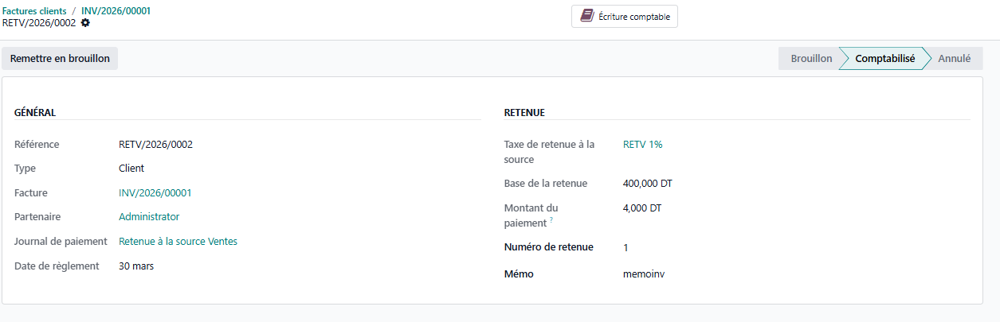
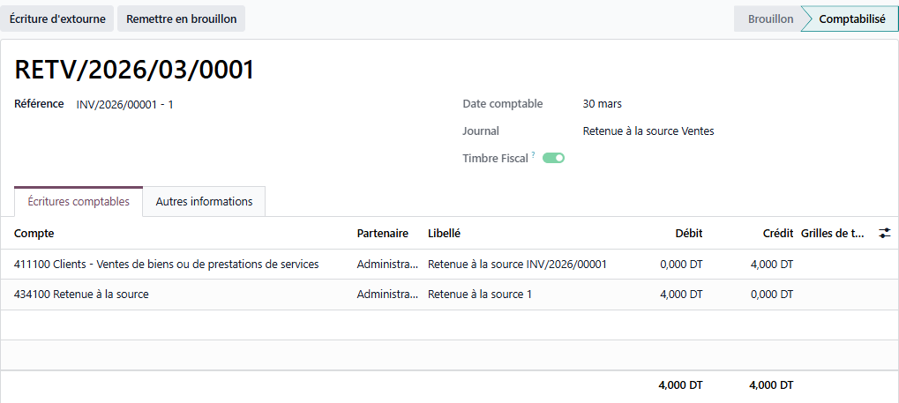

Démonstration
1. Bouton sur facture

2. Assistant de création

3. Document RAS

4. Écriture comptable

5. Configuration journal

6. Configuration taxe

Module Odoo pour gérer la retenue à la source (RAS) conforme à la réglementation tunisienne : calcul, écriture comptable, lettrage, seuil, types d'opération TEJ.


Email : akremkhelifi07@gmail.com
WhatsApp : +216 54 444 373
Site : https://merkago.net
Technical Name : retenue_source_tn | Licence LGPL-3